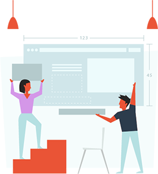

Pertama anda ingin mengetahui, apa saja fitur yang di perlukan oleh klien anda, atau jika website tersebut milik anda sendiri berarti anda perlu mewawancara calon visitor website anda sehingga anda tau apa saja keinginan mereka.
Kemudian anda akan mendesain gambar 2 dimensi menggunakan Photoshop. File photoshop tersebut tidak dapat langsung di tampilkan di internet atau di onlinekan.
Karena desain yang anda buat menggunakan photoshop tersebut tidak dapat langsung di tampilkan di internet atau di onlinekan maka anda perlu mengubahnya agar dapat di tampilkan menjadi website yang online, menggunakan aplikasi yang namanya HTML +CSS.
Terkadang, anda memerlukan animasi untuk lebih mudah menyampaikan pesan anda pada pengunjung. Diatas ini adalah contoh animasi sederhana yang merupakan bagian dari web desain.
Ada sedikit jebakan di sini, penggunaan animasi meskipun dapat membuat sebuah website lebih menarik tidak boleh membuat website menjadi berat dan lelet saat di akses. Seperti anda, para pengunjung website milik anda nanti, akan segera meninggalkan sebuah website yang lelet saat di akses. Untuk itu, janganlah menggunakan Animasi yang dibuat menggunakan aplikasi FLASH.
Tujuan utama dari mendesain sebuah website adalah membantu agar pengunjung mudah mengerti layanan atau informasi yang anda berikan dan Mau Mengikuti apa yang menjadi keinginan anda.
Sebagai contoh, salah satu desain yang terbaik adalah Whats App, orang tua saya yang berumur lebih dari 50 tahun tidak perlu bertanya ataupun membaca petunjuk cara penggunaan Whats App. Dengan alami dan mudah mereka dapat menggunakan Whats App. Inilah kehebatan dari desain yang intuitive… desain yang mengerti apa kebutuhan penggunanya. Bahkan di kantor pusat babastudio ada seorang OB yang tidak tamt SD tapi ahli banget menggunakan Whats App.
Atau contoh lain adalah Facebook dan Instagram. Banyak orang yang dalam waktu singkat dapat menggunakan facebook tanpa perlu membaca cara penggunaanya. Saya ingat sekali, ketika pertama menggunakan Facebook, saya langsung bisa memakai tanpa kebingungan sedikitpun dan tanpa perlu bertanya pada orang lain.
Tapi di saat yang sama, anda pasti punya pengalaman mengakses sebuah website yang “ribet” banget makenya. Sampai-sampai anda akhirnya kapok dan tidak mau lagi mengunjungi website tersebut. Meskipun tampilannya menarik dan warnanya juga bagus banget. Bayangkan jika website tersebut adalah milik anda.
Semua hal tersebut adalah gabungan dari ilmu Hypnotic Web Desain, UX dan UI. keahlian ini dapat anda pelajari setelah menguasai Photoshop, HTML+CSS. Sehingga anda akan menjadi seorang designer yang bukan hanya mampu membuat website yang indah namun juga amat intuitive (mudah digunakan pemakai) lebih penting lagi adalah desain anda mampu membujuk pengunjung sampai membayar layanan atau jualan milik anda yang ada di website tersebut.
User Interface, adalah ilmu yang dipelajari untuk membuat seseorang menggunakan fitur-fitur yang sudah di desain dalam website tersebut. Misalnya bagaimana membuat desain bentuk dan warna dari sebuah tombol agar membuat seseorang jadi ngiler atau bernafsu untuk mengklik …. memencet tombol yang telah anda buat di website.
Sedangkan UX atau user experience adalah sebuah ilmu, yang mempelajari bagaimana membuat seseorang mengalami pengalaman yang mengesankan di sebuah website. Bayangkan sebuah website adalah sebuah restoran mewah, anda akan di jamu dari mulai resepsionis lalu ke meja tempat anda akan makan dimana meja tersebut di desain dengan menarik dan membuat anda betah dan nyaman sampai akhirnya anda makan, lalu membayar makanan dan kemudian terpikir untuk kembali lagi ke restoran tersebut.
Dibuat oleh Palguna yang berada di Grup PWPB Mantap Jiwa